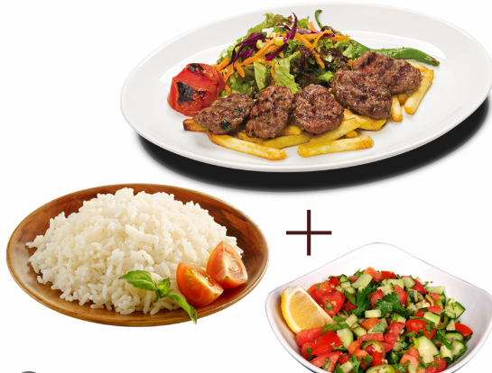

<div>
    <h1>Burak C. Güngör</h1>
    <!-- açıklama yazıldı -->
    <h2>Hakkımda</h2>
    <p>
        <em>Merhaba.Ben <span style="color: blue;">Burak</span>.</em>
    </p>
</div>
<hr>
<!-- resim ve link çalışması -->
<div>
    <div>
        <h3>İlgi Alanlarım</h3>
            <ol>
                <li><strong>Film</strong></li>
                <ul>
                    <li><a href="https://www.imdb.com/title/tt0120737/" target="_blank">LOTR</a></li>
                    <li>Star Wars</li>   
                </ul>
                <li><strong>Futbol</strong></li>
                <ul>
                    <li><a href="https://www.galatasaray.org/anasayfa" target="_blank">Galatasaray</a></li>
                    <li>Barcelona</li>
                </ul>

                <li><strong>Belgesel</strong></li>
                <ul>
                    <li>Savaşın Efsaneleri</li>
                    <li>Geleceği Kodlayanlar</li>
                </ul>
            </ol>
    </div>
    <div>
        <h2>Sevdiğim Yemekler</h2>
        <br>
        

        <map name="menumap">
        <area shape="rect" coords="100,10,400,150" alt="Kofte" href="https://www.nefisyemektarifleri.com/video/kadinbudu-kofte-tarifi/" target="_blank">
        <area shape="rect" coords="20,172,200,350" alt="Pilav" href="https://www.nefisyemektarifleri.com/video/sehriyeli-pirinc-pilavi-nasil-yapilir/" target="_blank">
        <area shape="circle" coords="337,300,44" alt="Salata" href="https://www.nefisyemektarifleri.com/video/coban-salata-nasil-yapilir/" target="_blank">
        </map>
    </div>
</div>
